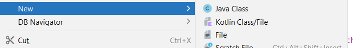
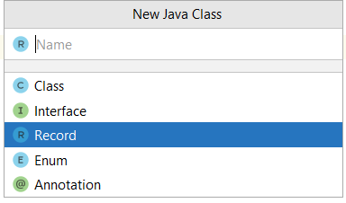
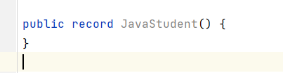
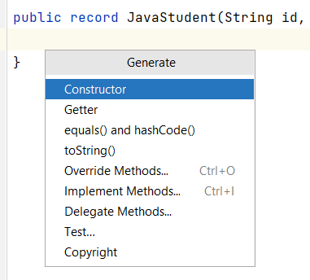
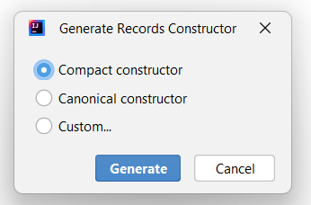

📦 Records en Java
Java introdujo un nuevo tipo llamado Record (registro) que pasó a formar parte oficialmente en el JDK 16. Su propósito es reemplazar el código boilerplate del POJO y ser más restrictivo.
Los records ofrecen una forma compacta, clara y segura de crear clases cuyo propósito principal es almacenar datos.
Son ideales para representar objetos inmutables sin escribir código repetitivo.
🧩 ¿Qué es un record?
Un record es una clase especial de Java que:
- Es inmutable por defecto. (No está pensada para ser alterada)
- Declara automáticamente:
- Atributos
private final - Un constructor compacto
- Getters (llamados accessors)
equals(),hashCode()toString()
- Atributos
Ejemplo básico:
public record Persona(String nombre, int edad) {}
Esto equivale a escribir muchísimo código en una clase normal. El desarrollador no tiene que escribir nada de este código.
🌟 Cómo crear un Record
Vamos a crear un record de estudiante como hicimos en el POJO. Para ello, En el IntelliJ, dentro del proyecto, en un directorio hacemos botón derecho del ratón, "New -> Java class".

Seleccionamos la opción "Record" (Necesito tener instalado JDK 16 o superiores)


Si nos fijamos en el código generado tenemos, el modificador de acceso public más la palabra record y luego el nombre que le hemos dado seguido de unos paréntesis. Éstos paréntesis es similar a un constructor, podemos configurar parámetros dentro de los paréntesis. A la parte de paréntesis se le conoce como record header.
Copiamos los mismos que teníamos en Student.java:
public record JavaStudent(String id, String name, String dateOfBirth) {
}
Hemos modificado todo el código del POJO del apartado anterior por estas dos líneas. Como record no soporta modificaciones en sus variables de instancia porque son finales, no hay setters.
🧱 ¿Qué genera automáticamente un record?
Record header: a los parámetros que están dentro de la record header se les llama componentes.
Para el ejemplo:
public record Persona(String nombre, int edad) {}
Java genera el siguiente código implícito:
- Por cada componente, atributos privados y finales con el mismo nombre, son los component field:
- private final String nombre;
- private final int edad;
- Getters, un método de acceso público que tiene el mismo nombre y tipo del componente. Lo que sería un getter, pero no tiene ningún prefijo tipo get o is delante:
- nombre()
- edad()
- Un constructor con los mismos componentes y en el mismo orden descritos dentro de la cabecera de record:
//constructor principal del record
public Persona(String nombre, int edad) {
this.nombre = nombre;
this.edad = edad;
}
equals(), hashCode(), toString() basados en los componentes definidos.
🧰 Cómo usar un record
Persona p = new Persona("Ana", 25);
System.out.println(p.nombre()); // Ana
System.out.println(p.edad()); // 25
System.out.println(p); // Persona[nombre=Ana, edad=25]
⚠ No puedes modificar sus atributos porque son final.
🏗 Tipos de constructores en un record
Aunque los records generan un constructor automáticamente, puedes definir 3 tipos de constructores:
✔ Constructor canónico (completo, con todos los parámetros)
Es el constructor con todos los parámetros o componentes. Este constructor está implícitamente creado, pero podemos sobreescribirlo.
El constructor canónico solo tiene sentido crearlo cuado quiero añadir alguna validación en algún campo o dar un comportamiento diferente al de por defecto. Si no hace nada nuevo crearlo es redundante.
Lo declaras como en una clase normal:
public record Libro(String titulo, int paginas) {
public Libro(String titulo, int paginas) {
if (paginas <= 0) {
throw new IllegalArgumentException("Páginas inválidas");
}
this.titulo = titulo;
this.paginas = paginas;
}
}
public record JavaStudent(String id, String name, String dateOfBirth) {
//Canonical constructor
//Hacer esto no tiene sentido, porque ya está implícito cuando poner los componentes en la cabecera
public JavaStudent(String id, String name, String dateOfBirth) {
this.id = id;
this.name = name;
this.dateOfBirth = dateOfBirth;
}
//Canonical constructor
//En este caso, SI tiene sentido, porque queremos hacer algunas validaciones antes de asignar los valores
public JavaStudent(String id, String name, String dateOfBirth) {
this.id = (id.isEmpty()) ? "Unknown": id;
this.name = name;
this.dateOfBirth = dateOfBirth;
}
}
Solo se recomienda si necesitas lógica extensa dentro, ya que el te lo crea automáticamente.
✔ Constructores adicionales, personalizados (sobrecarga)
Es lo que conocemos como constructor sobrecargado. Creamos constructores personalizados con un número menor de elementos que el constructor canónico.
El único requisito con este constructor es, que la primera línea tiene que ser una llamada al constructor canónico para que se inicialicen los campos o componentes.
public record JavaStudent(String id, String name, String dateOfBirth) {
public JavaStudent(String id, String name) {
this(id, name, null);
}
public JavaStudent(String id, String dateOfBirth) {
this(id, null, dateOfBirth);
}
}
- El sobrecargado SIEMPRE debe llamar al constructor canónico (implícito o escrito por ti)
public record Punto(int x, int y) {
public Punto() {
this(0, 0); // constructor por defecto
}
public Punto(int x) {
this(x, 0);
}
}
✔ Constructor compacto (el más habitual)
Este constructor se utiliza para realizar validaciones en los argumentos o componentes antes de asignarlos a las variables de instancia de la clase.
- ❗No se pueden tener ambos constructores, el compacto más el canónico explícito.
- El compact constructor se declara sin paréntesis y sin parámetros o argumentos.
- Tiene acceso a todos los argumentos o parámetros del constructor canónico, no confundir con los campos de la clase o variables de instancia de la clase.
- ❗No se pueden hacer asignaciones a los campos de instancia de la clase en este constructor.
- Todas las asignaciones implícitas del constructor canónico ocurren después de la ejecución del código del constructor compacto.
- Si defines un constructor compacto, pasa a ser el canónico ya que después se harán las asignaciones implícitas. Por eso no puedes tener ambos constructores.
Warning
Si defines un constructor canónico completo, el compacto desaparece. YA no puedes usar un compacto, porque el canónico lo has escrito tú. El compacto no existe. Tú controlas toda la lógica, incluida la validación y asignación.
Ejemplo:
//Compact constructor
public JavaStudent {
if (id.isEmpty()) id ="Unknown";
//id = this.id; //NO podría hacer esto, porque this.id todavía no se ha inicializado
//this.id = id; //TAMPOCO podría hacer esto porque se hará más tarde de manera implícita,
//y como las variables de instancia son finales, no puedo reasignarles valores.
}
Te permite validar datos sin reescribir parámetros:
public record Producto(String nombre, double precio) {
public Producto {
if (precio < 0) {
throw new IllegalArgumentException("El precio no puede ser negativo");
}
}
}
Beneficio:
No repites this.nombre = nombre.
🧠 Cómo funciona realmente el constructor compacto
Este código:
public Persona {
if (edad < 0) throw new IllegalArgumentException();
}
Java lo transforma internamente en:
public Persona(String nombre, int edad) {
if (edad < 0) throw new IllegalArgumentException();
this.nombre = nombre;
this.edad = edad;
}
El orden es siempre:
- Validaciones del constructor compacto
- Asignación automática de los campos (this.nombre = nombre)
🧠 ¿Cómo generar los constructores desde el IntelliJ?
Si queremos generar un constructor, dentro de la clase record podemos hacer click botón derecho del ratón -> constructor:

IntelliJ me ofrece tres opciones para generar un constructor:

🔧 Métodos dentro de un record
Los records sí permiten métodos:
public record Alumno(String nombre, double nota) {
public boolean aprobado() {
return this.nota >= 5;
}
}
✨ Campos estáticos y métodos estáticos
Los record pueden tener campos y métodos estáticos. Pero sólo se permiten campos estáticos. Los record no pueden declarar campos de instancia.
public record Vehicle(int price) {
private static int wheels;
private static final int ZERO = 0;
static {
wheels = 4;
}
public Vehicle() {
this(ZERO);
}
public static void printWheels() {
System.out.println(wheels);
}
//también podemos tener métodos de instancia
public double calculate(int x) {
return x * 9.99;
}
}
🚫 Qué NO puede hacer un record
- No puede tener atributos mutables (solo final).
- No puede extender clases (pero sí implementar interfaces).
- No puedes reasignar atributos.
🎯 ¿Cuándo usar un record?
Con Record no tenemos setters, ni forma de modificar nuestros datos. Esto es debido a que, Record ha sido diseñado para ser inmutable, para que los datos se mantengan encapsulados y protegidos de mutaciones involuntarias.
Por tanto, si necesitas modificar los datos de tu clase, nunca usaremos un Record, sino que crearemos un POJO como hicimos en el apartado anterior.
Úsalo cuando:
- Quieres representar datos inmutables.
- Necesitas transportar información entre clases.
- Quieres evitar escribir getters,
toString, etc. - Necesitas un objeto simple que represente algo:
Punto,Producto,Usuario, etc.
No lo uses cuando:
- Necesitas mutabilidad.
- La clase requiere herencia clásica.
- La lógica es compleja.